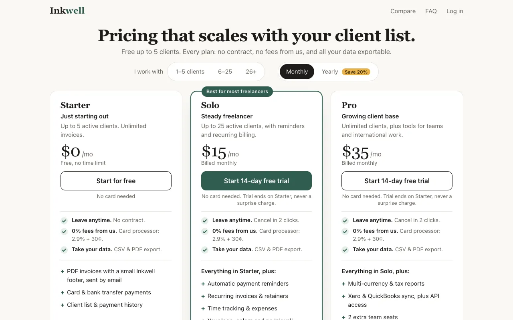
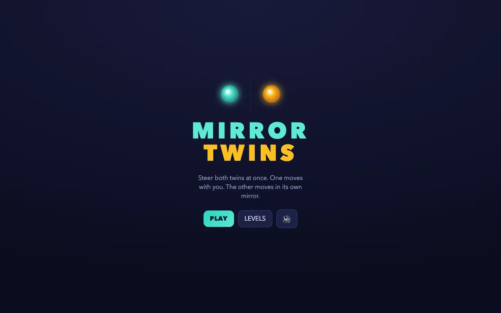
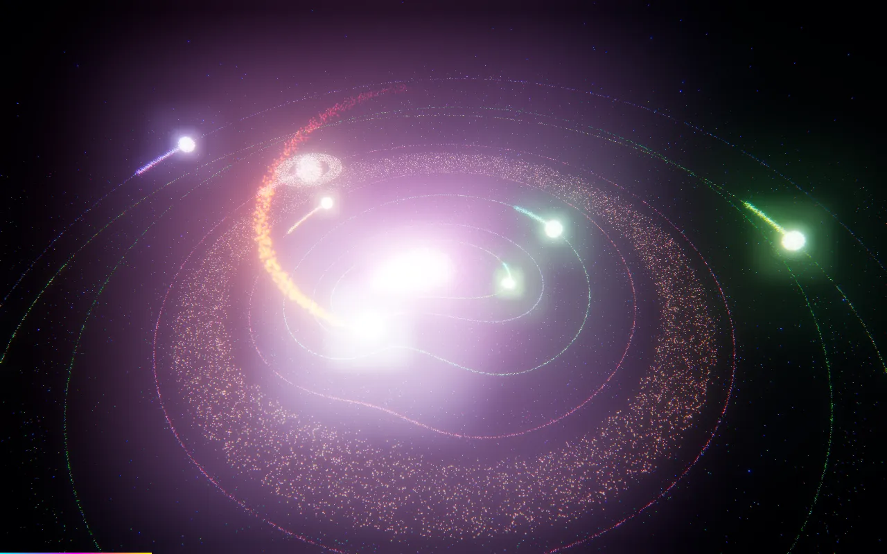

An open test of the ambition plugin for Claude Code
Does /be-ambitious beat the same prompt typed plainly?
Each example is one ordinary request. Plain Claude answers it, then gets “Push it further.” The plugin gets the same prompt and the same words, and runs its seven-step method instead. The plugin wins an example only if its final beats all three plain versions. Every version is on its page.
Results
| Example | Verdictand turn-1 gate | Baselineplain answer | Plain pushanswer + “Push it further.” | Previewplugin turn 1 | Full runplugin, all steps | Plugin |
|---|---|---|---|---|---|---|
| data/heat-pumpclaude-sonnet-5-5 | Beats the baselineGate pass | $0.23 · 1.8 min | $0.37 · 3.0 min | $0.14 · 0.8 min | $3.49 · 20.4 min9.4× the plain push's cost | ccf02d5 outdated |
| design/pricing-pageclaude-sonnet-5-5 | Beats the baselineGate pass | $0.13 · 0.9 min | $0.33 · 2.3 min | $0.18 · 1.0 min | $2.20 · 11.9 min6.7× the plain push's cost | ccf02d5 outdated |
| dev/cycling-prototypeclaude-sonnet-5-5 | Beats the baselineGate pass | $0.20 · 1.4 min | $0.42 · 3.2 min | $0.36 · 2.0 min | $2.97 · 68.9 min7.0× the plain push's cost | ccf02d5 outdated |
| dev/photo-renameclaude-sonnet-5-5 | Ties the baselineGate pass | $0.044 · 0.3 min | $0.20 · 1.6 min | $0.12 · 0.5 min | $4.21 · 56.9 min20.5× the plain push's cost | ccf02d5 outdated |
| dev/url-shortener-architectureclaude-sonnet-5-5 | Beats the baselineGate pass | $0.093 · 0.9 min | $0.25 · 2.6 min | $0.18 · 1.0 min | $2.34 · 20.3 min9.4× the plain push's cost | aa6de6f |
| learn/bayesclaude-sonnet-5-5 | Beats the baselineGate pass | $0.12 · 0.9 min | $0.24 · 2.0 min | $0.20 · 1.1 min | $2.96 · 32.7 min12.5× the plain push's cost | ccf02d5 outdated |
| game/puzzleclaude-sonnet-5-5 | Beats the baselineGate pass | $0.17 · 1.3 min | $0.44 · 28.8 min | $0.20 · 1.2 min | $1.83 · 15.6 min4.1× the plain push's cost | aa6de6f |
| plan/cycling-appclaude-sonnet-5-5 | Beats the baselineGate pass | $0.12 · 1.2 min | $0.24 · 2.4 min | $0.19 · 0.9 min | $3.06 · 19.9 min12.8× the plain push's cost | c59ebef |
| threejs/neon-implosionclaude-sonnet-5-5 | Beats the baselineGate pass | $0.16 · 1.7 min | $0.23 · 2.4 min | $0.20 · 1.1 min | $2.91 · 36.5 min12.8× the plain push's cost | ccf02d5 outdated |
| write/candle-marketingclaude-sonnet-5-5 | Beats the baselineGate pass | $0.071 · 0.7 min | $0.15 · 1.5 min | $0.16 · 1.0 min | $3.97 · 23.0 min26.9× the plain push's cost | aa6de6f |
One run per example, judged by us. These are illustrations of the plugin, not measurements. The plugin didn't win every example, and its wins cost many times more than asking plainly: our overall assessment.
Examples
“Work out whether switching from my gas boiler to a heat pump would save me money, as a Markdown file”
data-analysis
Work out whether switching from my gas boiler to a heat pump would save me money, as a Markdown file
A regenerable model with 84/84 checks, sourced Ofgem prices with VAT, Monte Carlo and quote grids; hand-recomputed figures hold. The baseline is a one-off estimate.

design
Design a pricing page for an invoicing app for freelancers, as a single web page
Both are clean; the final adds a pricing idea (a clients-per-month selector across Starter/Solo/Pro) and trust lines, and stays clean on phone.

development
Build a clickable prototype of the app in plan.md that I can open as a single html file
The final has more behind the same sign-in screen (welcome flow, simulated ride, segment leaderboards, paywall, reset) plus a rider test script and checks, but the visible gain over the plain push is small for 69 min and $2.97; not clicked through screen by screen.
“Write a Python script that renames my photos by the date they were taken”
development
Write a Python script that renames my photos by the date they were taken
Both are safe with exact undo. The plugin adds 54 tests but keeps a misdated existing name as already named; the baseline renames it but its dry run numbers files differently from the real run.
“Design the architecture for a URL shortener that handles 10k requests a second, as a Markdown file”
development
Design the architecture for a URL shortener that handles 10k requests a second, as a Markdown file
The plain push assumes over 95% of reads come from cache. The final tests that against a simulation and an hour of real Wikipedia traffic, finds 20–40% more likely, and sizes the database to work with no cache at all. Every decision says what would flip it, it works out that guessing 7-character links finds about 736k live links a day, and it shows where the design breaks at 100k requests a second. Its own check passes 43/43. (A first run got stuck planning a rewrite instead of improving the document; we fixed the method's wording and re-ran.)

education
Explain Bayes' theorem with an interactive visualisation, as a single web page
The final turns a slider demo into a lesson: asks for a guess first, then steps through why a positive test is usually a false alarm with 1,000 dots and plain-language sliders.

games
Make an original puzzle game I can play in the browser, as a single web page
A title screen, a first level that teaches the rule, 16 levels in chapters that each add a twist (pads that flip how the second twin moves), stars against a par a solver computes, so every level is proven solvable, and a phone d-pad. The plain push has more levels (22) and more object types, but nothing proves its levels can be solved, and it looks plainer. (A first run collapsed into one turn and never pushed; this is the second.)
“Make a plan for a react native expo social gamified fitness tracker app for the cycling niche, and save it to disk”
planning
Make a plan for a react native expo social gamified fitness tracker app for the cycling niche, and save it to disk
A plan a team could start building from: 37 sized tickets with acceptance criteria, and two real traps the plain plans miss (Google Play's 14-day closed test, and a home privacy zone its own simulation could undo). Its reason for riders to switch is weak, and it's three times longer.

threejs
Create a vivid pointer interactive abstract neon art solar system particle implosion, a 10 second looping animation in three.js, as a single web page.
Only the final reads as a scene: the baseline, the plain push and the plugin's own first version blow out to white bloom in the captured frames; the final shows orbits, a particle ring and trails, seamless loop, 0 console errors.
“Write a marketing plan for my handmade candle shop on Etsy, as a Markdown file”
writing
Write a marketing plan for my handmade candle shop on Etsy, as a Markdown file
A dated 24-week plan that fits in 5 hours a week. Its margin table shows a $38 two-jar bundle earns about $4, or loses money when an Etsy Offsite Ad gets the sale; it warns that monthly orders swing by about ±6 by chance, and plans pouring around cure time. The plain push is a generic template with [brackets]. Weak point: at 9,200 words it's long for someone with 5 hours a week. (Second run, after the same method fix as url-shortener.)
Kinds of example
The prompts cover different kinds of work, and each prompt names the form of what it wants, so both sides make the same kind of thing. How we judge depends on the kind:
- Web pages (games, design, education, prototypes, 3D animation). The harness opens every version in a real browser at desktop and phone sizes, records frames over time, checks for console errors and, for looping animations, whether the loop is seamless. We also open each page live and use it. The frames and the live pages are on each example's page.
- Documents (analysis, architecture, marketing, written as Markdown). Every version is rendered on the page in full. We read them through, recompute key figures and check that the sources resolve. When a run leaves a script or check beside the document, we run it too.
- Scripts (development). The pages show each version's main script in full. We run each version on the same test files, including awkward cases and its undo, and compare what it actually did, not what it says it does.
- Plans (planning). The prompt is typed with plan mode on, so the deliverable is the plan itself. Pushing on improves the plan, and may write checks, simulations or a small spike to test it, but the app is never built. We compare the plans as plans: whether someone could act on them, and whether they're right.
Every example page also has the full session logs for both sides (replayable), the replies and files from each turn, and, for the plugin, what each step changed and what it cost.
How it's tested
- A baseline. The prompt exactly as a user would type it, once per example. In the same chat, plain Claude then gets “Push it further.” (the plain push), which shows what you get by just asking for more.
- The same prompt, with the plugin.
/be-ambitiousgets the same words. Every run works in a fresh throwaway macOS virtual machine with a real browser, the same model, effort and limits, so it can install tools and look at its own work the way Claude can on your machine. - The gate. Turn 1 must be sent exactly what the baseline was sent: the same system prompt, tools, parameters and message, checked from the transcripts. Then it makes a first version and stops at a checkpoint: stop here, or push on. That first version is a second plain sample, so the gap between it and the baseline shows how much plain runs vary.
- Pushing on. A stand-in user (the same model, knowing only the prompt) answers the checkpoint with “Push it further.” and answers any question the way someone who typed that prompt most plausibly would. The plugin then runs its steps one at a time; each step's changes and cost are shown on the example's page.
- Our review, not an auto judge. No model grades the results. The harness captures every version the same way, and we read, run and use them side by side, as described under Kinds of example, then record the verdict and why.
- Only the current plugin counts. Each run records the plugin it used. Runs from an older plugin are marked outdated.
Code: bench/ · Raw results: examples/RESULTS.md